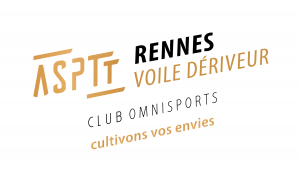
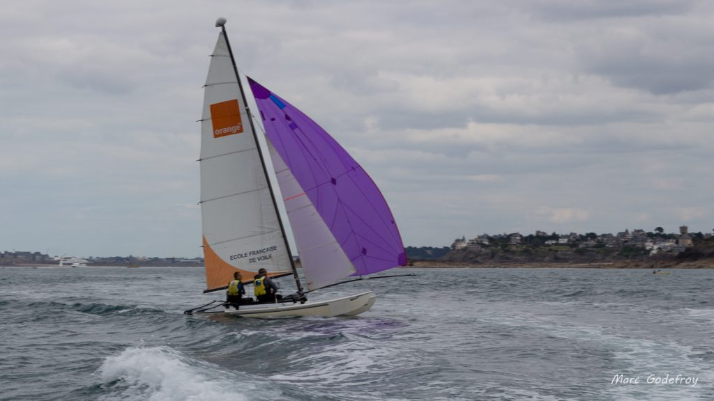

Le Centre Nautique de Port Blanc propose une activité Catamaran (Hobie Cat 16) pour adultes :
- le samedi matin ou après-midi de Mars à Juin et Septembre à Novembre
- le samedi ou le dimanche en Juillet-Août
Venez naviguer dans un cadre d’exception entre Saint-Malo et Lancieux en passant par l’île de Cézembre et l’île des Ebihens.
Le Centre Nautique fonctionne sur le principe du bénévolat de tous les adhérents pour l’entretien du matériel et la gestion.
Localisation : Plage de Port Blanc entre Dinard et Saint Lunaire
